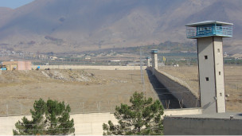

پذيرش > اخبار > این بار زندان قرچک ورامین، هفت سوله برای نگهداری صدها زندانی زن


 این بار زندان قرچک ورامین، هفت سوله برای نگهداری صدها زندانی زن این بار زندان قرچک ورامین، هفت سوله برای نگهداری صدها زندانی زن
17 اردیبهشت 1390 - - نسخه قابل چاپ
کلمه : زندانیان سیاسی زن که در روزهای گذشته به زندان قرچک ورامین منتقل شده اند، نامه ای خطاب به ملت ایران، آیات و مراجع عظام تقلید، مقامات مسئول جمهوری اسلامی و مجامع حقوق بشری در سراسر دنیا نوشته اند.آنها گفته اند اگر چه پش از این شرایط بسیار دشواری را در زندان رجایی شهر تجربه کرده بودند، اما اکنون آنچه که در زندان قرچک ورامین می بینند جز محیر العقول خواندنش واژه ای دیگر برای توصیفش نمی یابند.
به گزارش کلمه ، زندانیان سیاسی زن که به تازگی به زندان ورامین منتقل شده اند در تظلم نامه خود نوشته اند :«تنبیهات بسیار شدید و برخوردها و درگیری های میان زندانیان بسیار دور از شان و مقام و منزلت انسان است. چرا که از خود می پرسیم در کجای دنیا نتیجه ی درگیری بر سر آب جوش و تنبیه متعاقب آن کشیدن ناخن های دستان یک زندانی باشد؟ در کجای دنیا عده ای مرد باتوم به دست را به بند نگهداری زنان زندانی به قصد ضرب و شتم می فرستند؟ در کجای دنیا کودکان ۱۴ و ۱۵ ساله را در چنین شرایطی نگهداری می کنند؟ »
این زندانیان دست به دست به دامان وجدان های بیدار شده اند تا اگر ذره ای انسانیت باقی مانده باشد، در برابر این بی حرمتی ها به شان و منزلت انسانی که ملائک بر او سجده برده اند سکوت نکنند.
زندانیان سیاسی زن در این نامه تنها به انتقال خود از این زندان و بهبود شرایط خود نمی اندیشند.آنها می پرسند:
«مگر مسئولین قضایی کشور، تمام آنچه شرع و قانون و اخلاق بدان معتقد است را به گوشه ای افکنده اند، و سیستم نظارتی خود را بر این اصل استوار کرده اند که تمامی مجرمین، از کوچک ترین مرتکبین به جرم تا بزرگ ترینشان مستحق مرگ اند. که اگر چنین بود امر به معروف و نهی از منکر به چه منظور به عنوان یکی از اساسی ترین مبانی شریعت اسلام شناخته شده است.»
این زندانیان گفته اند:« دریغا که شرمساریم از آنچه در اطرافمان می گذرد و دو چندان شرمساریم از آن که نظیر چنین فجایع غیر انسانی در مملکت ما به وقوع می پیوندد. کشوری که کباده ی تاریخ و فرهنگ و هنرش، دبدبه ی اسلام گرایی و انسان دوستی اش گوش فلک را کر کرده است.»
پس از انتشار نامه سید ضیا نبوی در باره شرایط غیرانسانی زندان کارون اهواز، نامه زندانیان سیاسی زن نیز تصویری تکان دهنده و فاجعه بار از زندان زنان در قرچک ورامین ارائه می دهد.تصویری که بار دیگر این سوال را مطرح می کند که ایا وعده انقلاب اسلامی این بود؟آیا این است وعده قانون اساسی حمهوری اسلامی که از حفظ کرامت انسان ها سخن می گوید؟
خانواده های زنذانیان سیاسی زن در زندان رجایی شهر که به تازگی به زندان قرچک ورامین منتقل شده اند می گویند که این زندان کهریزکی دیگر است .گفته می شود که به زودی زندانیان سیاسی زن در اوین نیز به قرچک ورامین منتقل خواهند شد.
به گزارش کلمه، متن کامل نامه ۹ زندانی سیاسی زن در قرچک ورامین به شرح زیر است :
ملت شریف ایران
وجدان های بیدار
آیات و مراجع عظام تقلید
مقامات مسئول جمهوری اسلامی
مجامع حقوق بشری در سراسر دنیا
حدود یک هفته از انتقال ما زندانیان سیاسی زن زندان رجایی شهر به “زندان قرچک ورامین” می گذرد. آن چه ما را وادار به نوشتن این نامه کرده است، حجم عظیم اتفاقاتی ست که جز محیر العقول خواندنشان واژه ای دیگر برای توصیفشان نمی یابیم.
از بدو ورود به این اصطلاح “ندامتگاه” چنان از آن چه در اطرافمان می گذرد شگفت زده ایم که باور نمی کنیم سال هاست جمعی از زندانیان را در جمهوری اسلامی ایران به قصد “تادیب” به چنین مکانی می فرستند. ما که تجربه ی اسارت در زندان رجایی شهر را نیز در کوله بار خود داریم، هرگز گمان نمی بردیم که پس از خروج از رجایی شهر شاهد چنین وضع اسف باری باشیم.
در بند زنان زندان رجایی شهر، هر روز شاهد انواع و اقسام بی حرمتی ها، قانون شکنی ها، موارد متعدد تعدی به حقوق زندانیان و چه بسا در مواردی قتل زندانیان توسط مجرمین خطرناک بودیم. به هر روی پیگیری های مداوم اینجانبان، منجر به اختصاص دو اتاق مخصوص زندانیان به اصطلاح امنیتی شد. تا این که زمزمه ی انتقال زندانیان زن به زندان کچویی کرج آغاز شد. با خود می پنداشتیم که هر جایی بهتر از رجایی شهر باشد، اما پس از انتقال بخش اعظم زندانیان به زندان کچویی کرج، از شرایط ناگوار زندانیانی شنیدیم که همه به قصد “تادیب” و ” تربیت” بدانجا فرستاده شدند! از ابتدای این انتقال، شایعات گوناگونی نیز در رابطه با زندانیان سیاسی آغاز شد.
دیری نگذشت که سه شنبه هفته گذشته ما را نیز با دست بند و پا بند و تحت شرایط فوق امنیتی ای که حتی در دوران بازجویی نیز به خود ندیده بودیم، در بد ترین وضع ممکن راهی جاده ورامین کردند، تا پس از گذران سه ساعت و نیم راه، که منجر به بدحال شدن تنی چند از زندانیان نیز گردید، ما را به زندان قرچک ورامین واقع در بیابان های اطراف تهران، منتقل کردند. در رابطه با جایگاه جغرافیایی این زندان، همین بس که ما همچنان در عجبیم از آن که خانواده های ما چگونه خواهند توانست برای ملاقات با ما به این ینگه دنیا بیایند؟
بگذریم از این که با گذشت چیزی حدود یک هفته هنوز نه حرفی از ملاقات هست و نه دیداری با خانواده ها. به هر روی ما از آنچه تحت عنوان حقوق زندانیان نامیده می شود می گذریم و تنها از بدیهی ترین حقوق انسانی آدمیانی می گوییم که در این زندان مدت هاست نگهداری می شده اند و هم اکنون ما نیز به لطف مسئولین سعادت تجربه ی چنین شرایطی را پیدا کرده ایم.
زندان قرچک ورامین شامل هفت سوله است که هر سوله با تخت هایی به ظرفیت چند ده نفر تجهیز شده است. این در حالی ست که در هر کدام از این سوله ها بیش از ۲۰۰ زندانی نگهداری می شوند. عدم وجود کوچک ترین سیستم، برای تهویه هوا، وضعیت اسف بار بهداشتی به نحوی که بوی فاضلاب و شدت گازهای ناشی از آن برای بسیاری از زندانیان ناراحتی های تنفسی جدی به وجود آورده است. دو سرویس بهداشتی برای بیش از ۲۰۰ نفر، دو اتاقک حمام برای همین تعداد از زندانیان در نظر گرفته شده. محدودیت های به وجود آمده به خاطر سرویس های بهداشتی، عملا باعث شده است تا بسیاری از زندانیان از محیط سوله و مابین تخت ها به عنوان “سرویس بهداشتی” استفاده کنند.
به دلیل نبود حتی یک شیر آب جداگانه زندانیان برای شستشوی لباس و ظروف خود باید از همین حمام و سرویس بهداشتی استفاده کنند. روزانه به اصطلاح “سه وعده” غذایی در سلف سرویس این زندان ارائه می شود
مجددا از پرداختن به وضعیت بهداشتی سلف سرویس و کیفیت غذا اجتناب می کنیم و تنها این که در هفته گذشته به دلیل کمبود جیره غذایی، چندین بار وعده نامبرده به بسیاری از زندانیان نرسید. وعده مذکور نیز اغلب دو قرص نان خشک و یک سیب زمینی، و یا مقدار بسیار اندکی ماکارونی را شامل می شود. از آنجا که بسیاری از زندانیان کم سن و سال حتی زیر ۱۸ سال نیز در این زندان نگهداری می شوند، به وضوح می توان مشکل سوءتغذیه جدی را در میان بسیاری ز زندانیان مشاهده کرد.
بگذریم از نحوه برخورد مسئولین سلف سرویس، نگهبانان و … که با توهین آمیز ترین شکل ممکن زندانیان را خطاب کرده و مرتب نهیب می زنند. و باز بگذریم از عدم وجود امنیت جانی در سلف سرویس،به خاطر درگیری های زیادی که بر سر غذا به وجود می آید. تا جایی که غذاخوری زندان از جانب زندانیان به طعنه “کتک خوری” نامیده می شود.
در زندان های دیگر اغلب مکانی تحت عنوان فروشگاه جهت تهیه مایحتاج ضروری زندانیان از مواد خوراکی تا بهداشتی در نظر گرفته می شود که ما چنین چیزی را نیز در این زندان ندیده ایم.
محیط هواخوری زندان نیز فضایی ست که در حالت ایده آل ظرفیت چند ده نفر را داراست که همیشه به عنوان محل هواخوری
بیش از ۴۰۰ نفر استفاده می شود. محیطی با دیوار های سیمانی بلند که هیچ شباهتی با هواخوری زندان هایی همچون اوین و رجایی شهر ندارد. بزرگ ترین لطف مسئولین این زندان به زندانیان اجازه ی دوبار استفاده از آب جوش جهت نوشیدن چای است، که در هفته گذشته و بر اثر پرتاب ظرف آب جو ش به سمت یکی از زندانیان، چند تن از ایشان دچار جراحت جدی شدند.
تنبیهات بسیار شدید و برخوردها و درگیری های میان زندانیان بسیار دور از شان و مقام و منزلت انسان است. چرا که از خود می پرسیم در کجای دنیا نتیجه ی درگیری بر سر آب جوش و تنبیه متعاقب آن کشیدن ناخن های دستان یک زندانی باشد؟ در کجای دنیا عده ای مرد باتوم به دست را به بند نگهداری زنان زندانی به قصد ضرب و شتم می فرستند؟ در کجای دنیا کودکان ۱۴ و ۱۵ ساله را در چنین شرایطی نگهداری می کنند؟
دریغا که شرمساریم از آنچه در اطرافمان می گذرد و دو چندان شرمساریم از آن که نظیر چنین فجایع غیر انسانی در مملکت ما به وقوع می پیوندد. کشوری که کباده ی تاریخ و فرهنگ و هنرش، دبدبه ی اسلام گرایی و انسان دوستی اش گوش فلک را کر کرده است.
ما زندانیان سیاسی زن زندان قرچک ورامین پس از مشاهده ی شرایط فعلی تلاش های بسیار کرده ایم تا موارد مذکور را که تنها به مثابه ی قطره ای از دریای بی عدالتی ها و بی قانونی های موجود در این زندان بوده است را به عرض مقامات زندان برسانیم.
تا به امروز تنها صحبت از انتقال به بند زندانیان مالی، در راستای “کنترل تراکم جمعیت سوله ها” بوده است. اگرچه بند زندانیان مالی نیز تنها سوله ای ست با شرایط مشابه، که کاملا با محل نگهداری فعلی مرتبط بوده و هیچ برتری ای بر جایگاه فعلی ندارد اما مشکل ما تنها اجرای حقوق زندانیان نیست، که اگرچه آن را نیز حق مسلم خود می دانیم اما با توجه به آنچه ذکر شد، سخن از بدیهی ترین حقوق انسانی، زندانیانی ست که جملگی به قصد تادیب و تربیت بدین جا فرستاده شده اند.
مگر آنکه مسئولین قضایی کشور، تمام آنچه شرع و قانون و اخلاق بدان معتقد است را به گوشه ای افکنده باشند، و سیستم نظارتی خود را بر این اصل استوار کرده باشند که تمامی مجرمین، از کوچک ترین مرتکبین به جرم تا بزرگ ترینشان مستحق مرگ اند. که اگر چنین بود امر به معروف و نهی از منکر به چه منظور به عنوان یکی از اساسی ترین مبانی شریعت اسلام شناخته شده است؟ قانون اساسی، آیین دادرسی کیفری و قانون مجازات را برای چه و که تدوین کرده اند؟ در ابتدای این عریضه، وجدان های بیدار را خطاب قرار دادیم، دگرباره از مقامات جمهوری اسلامی ایران، مجامع حقوق بشری، آیات و مراجع عظام تقلید، خواهشمندیم، تا به وظیفه ی شرعی، انسانی و اخلاقی خود عمل نمایند وخواستار رسیدگی به وضعیت نگهداری زندانیان زن در زندان قرچک ورامین شوند.
در پایان خاطر نشان می شویم که در ابتدای مشاهده این وضعیت و هتاکی ها و برخوردهای غیر قانونی ای که با زندانیان می شد، تصمیم به اعتصاب غذا گرفتیم، و کماکان بر این حق خود اصرار می ورزیم که در صورت تداوم شرایط فعلی، بیمی برای گذشتن از جان خود نداریم که اگر داشتیم هیچ کدام امروز در این جا نبودیم. اگرچه تجربه به ما ثابت کرده است که بی ارزش ترین چیز در زندان، جان آدمی ست. آن هم چنین زندانی، که اساس وجودش نه قانون، نه نظام جمهوری اسلامی، نه مقامات قضایی که اصل انسانیت را به زیر سوال می برد. به هر روی دست به دامان وجدان های بیدار شده ایم تا اگر ذره ای انسانیت در وجودمان باقی مانده باشد، در برابر این بی حرمتی ها به شان و منزلت انسانی که ملائک بر او سجده برده اند سکوت نکنیم.
زندانیان سیاسی زن در زندان قرچک ورامین
ارسال به
بالاترین
،
توییتر
،
فریندفید
،
فیسبوک
در همين بخش :
 پروین ذبیحی برنده جایزه حقوق بشری سازمان غيردولتى اتريشى سودويند شد پروین ذبیحی برنده جایزه حقوق بشری سازمان غيردولتى اتريشى سودويند شد
پخش کارت پستال و بروشور در روز جهانی زن در تهران
تمدید زمان برای امضای بیانیهی جمعی از فعالان زن به مناسبت هشت مارس
مجوزی که در نطفه خفه شد
بیش از 2000 امضا در اعتراض به تبعیض های آموزشی به مجلس تحویل داده شد
ديگر بخش ها :
طرح یک میلیون امضا
|
مقالات
|
سایت نوشته ها
|
اخبار
|
گزارش كمپين
|
گفت و گو
|
علیه سکوت
|
كوچه به كوچه
|
نامه های شما
|
گزارش ویژه
|
گفتگو با اعضا
|
ویژه سالگرد کمپین
|
تصویر برابری
|
دل آرام علی
|
تریبون
|
مقالات
|
تاریخ شفاهی
|
خارج از چارچوب
|
کتابخانه
|
درباره کمپین
|
کمپین در شهرها
|
کمپین در بند
|
صدای تغییر
|
ویژه 22 خرداد
|
لایحه حمایت از خانواده
|
گالری
|
عشا مومنی
|
امیر یعقوبعلی
|
خدیجه مقدم
|
راحله عسگری زاده و نسیم خسروی
|
پروین اردلان،جلوه جواهری، مریم حسین خواه، ناهید کشاورز
|
زینب پیغمبرزاده
|
سعیده امین، سارا ایمانیان، محبوبه حسین زاده، ناهید کشاورز و همایون نامی
|
احترام شادفر
|
نسیم سرابندی زاده،فاطمه دهدشتی
|
وبلاگ مهمان
|
پرونده خرم آباد
|
دستگیری ها
|
مریم مالک
|
پرستو اللهیاری
|
مهرنوش اعتمادی
|
سمیه رشیدی
|
Other Languages
|
همراهان
|
«فراخوان کمپین ده روز با بهاره هدایت»
| English
|